프롬프트에 무엇을 담았나요
영상은 완성된 결과물부터 보여 줘요. 아래 화면의 네 칸이 이 영상에서 차례로 소개할 데모예요. 할 일 카드가 떠 있는 보라색 장면, 금속 공이 놓인 세로 화면, 종이 질감 위의 신경망, 어두운 배경의 지구본이에요. 발표자는 이 모든 게 코드일 뿐이라고 강조해요. 비싼 이미지 모델이나 영상 생성 모델도, After Effects도, 코딩이나 디자인 지식도 필요 없다고 해요. 코드는 Claude가, 3D 효과는 Three.js가 맡고, 사람은 원하는 걸 설명하기만 하면 돼요.
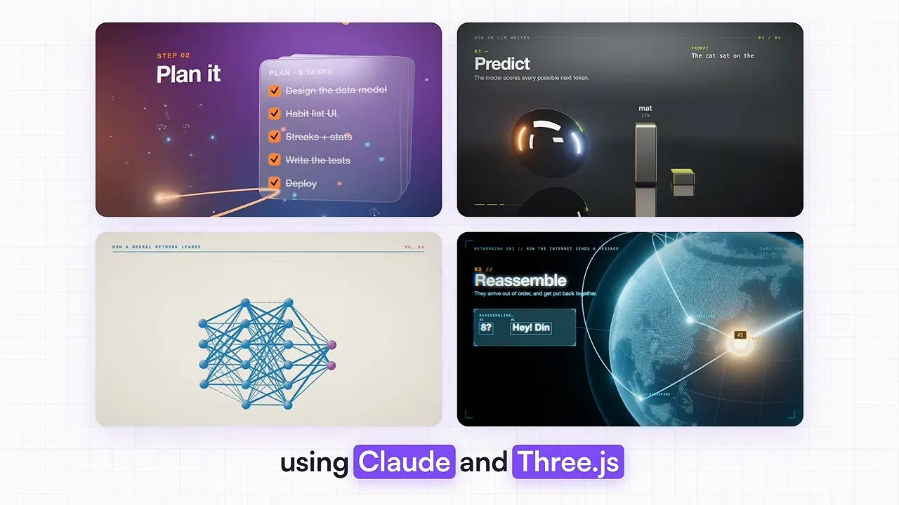
첫 번째 데모: 아이디어에서 앱까지
첫 데모는 'Claude Code로 아이디어에서 앱까지'를 설명하는 15초 영상이에요. 아래는 두 번째 장면 Plan it이에요. 할 일 다섯 개가 적힌 카드가 서리 낀 유리처럼 반투명해서, 뒤쪽 별빛 입자가 흐릿하게 비쳐요. 발표자는 이런 카메라 움직임과 유리 효과, 비쳐 보이는 요소 덕분에 Claude가 보통 만드는 평평한 모션 그래픽보다 훨씬 고급스럽다고 봐요.
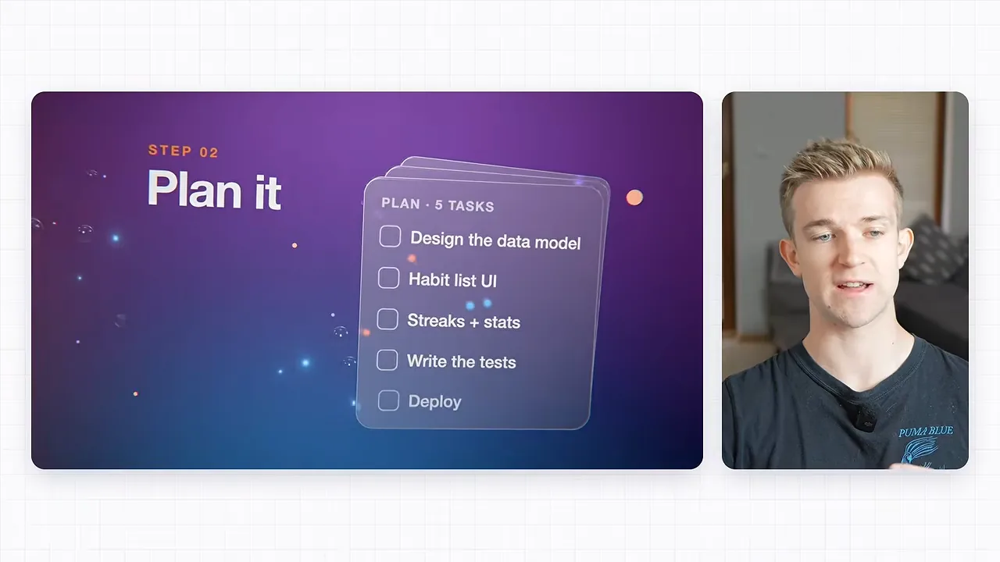
프롬프트는 장면과 시간을 쪼개서 써요
이 데모를 만든 프롬프트 전체가 화면에 나와요. 오른쪽 위 태그 네 개가 발표자가 짚는 요점이에요. Be specific(구체적으로), Each scene(장면마다), Timings(시간), Three.js예요. 첫 줄에서 15초, 1920×1080, 60fps라는 규격과 Three.js, 글래스모피즘 스타일을 정해요. 그 아래 1~5번이 장면별 설명이고, 장면마다 괄호 안에 초 단위 시간이 붙어 있어요.

프롬프트에 적힌 장면 다섯 개를 시간 순서로 옮기면 이래요. 9.5초와 10초 사이처럼 장면 사이에는 카메라가 빠르게 다음 장면으로 넘어가요. 프롬프트는 이걸 '장면 안에서는 천천히 떠다니고, 장면 사이에서는 빠르게 휙 이동한다'고 적어요.
프롬프트에는 렌더링 방법도 적혀 있어요. 'Playwright와 ffmpeg로 한 프레임씩 MP4로 렌더링하고, 모든 애니메이션을 시간 값 t로 움직여서 결과가 매번 같게 하라'는 문장이에요. 이 방식은 다음 섹션에서 다시 나와요.
고급스러움을 만드는 두 가지
첫째는 글래스모피즘이에요. 화면 왼쪽에 'Frosted glass panes', 그 아래 '뒤에 있는 걸 흐리게 비추는 반투명한 층'이라는 설명이 붙어 있어요. 가운데 반투명한 판 뒤로 보라색 공이 흐릿하게 비쳐요. 예전엔 에이전시가 Blender나 After Effects로 만들어야 해서 비쌌던 효과인데, 이제 Claude가 코드로 만들어요.
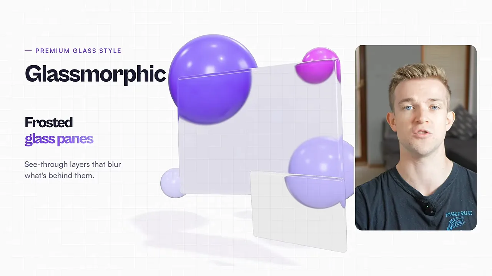
둘째는 카메라 움직임이에요. 아래 슬라이드에서 점선이 카메라가 지나가는 길이고, 그 끝에 작은 카메라가 판 사이를 지나고 있어요. 발표자는 이게 슬라이드쇼처럼 화면이 바뀌는 것과 다르다고 해요. 카메라가 요소 사이를 실제로 날아다니니 진짜 3D 공간처럼 보여요.

가장 중요한 건 모델이에요
발표자는 프롬프트보다 모델이 더 중요하다고 해요. 여러 회사의 모델을 다 시험해 봤는데, 녹화 시점엔 Opus 5.5가 이런 모션 그래픽에 가장 좋았다고 해요. Anthropic 모델 중에서도 Sonnet 5.5와 눈에 띄게 차이가 나고, OpenAI 모델보다도 낫다고 봐요. 이건 발표자가 직접 써 보고 내린 판단이에요.
Opus 5.5 is the best model from any provider to create these sort of motion graphics with.
이런 모션 그래픽을 만들 때는 어느 회사 것을 통틀어 Opus 5.5가 가장 좋은 모델이에요.
— 영상 02:08
화면 뒤에서는 이렇게 돌아가요
두 번째 데모는 'LLM이 글을 쓰는 방법'을 설명하는 세로 영상이에요. 아래 화면 가운데의 세로 화면을 보면, 맨 위에 'The cat sat on the'라는 문장이 있고 그 아래 Predict 단계가 나와요. 금속 공 옆의 막대들이 다음에 올 단어 후보(mat, floor, sofa)의 확률이에요. 바닥에 공이 비치는 반사와 3D 카메라 각도가 들어가 있어요.
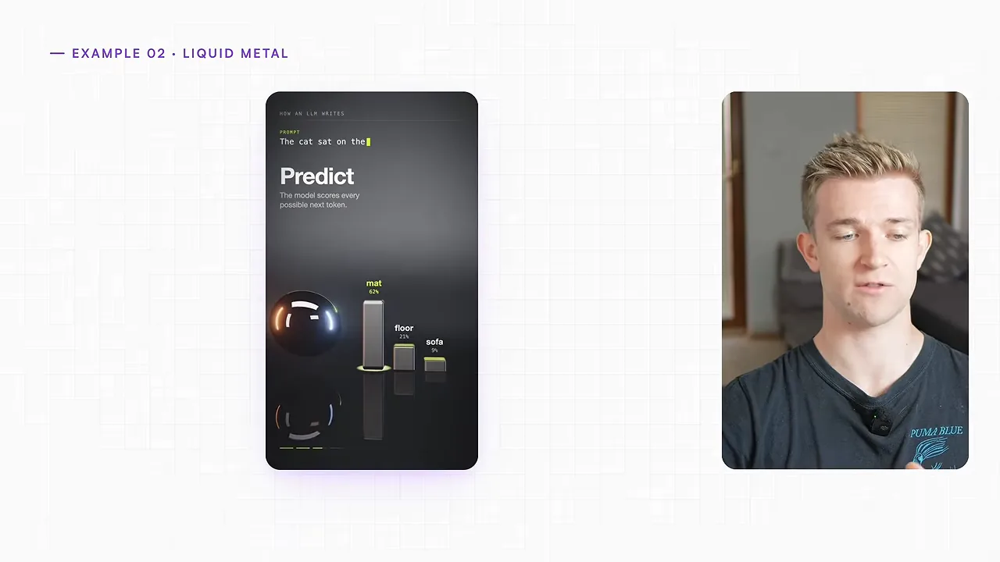
발표자도 아쉬운 점을 짚어요. 글자가 좀 작고, LLM(Large Language Model) 원리를 설명하는 방식도 프롬프트를 고치면 더 나아질 것 같대요. 그래도 3D 표현은 꽤 좋다고 봐요.
전부 코드예요
발표자가 예전 영상에서 모션 그래픽을 만들 때는 HyperFrames나 Remotion을 썼어요. 이번엔 둘 다 쓰지 않았지만 과정은 거의 같아요. 오른쪽 카드 세 장이 요점이에요. 모든 요소를 코드로 쓰고, 고급 웹사이트와 똑같으며, 움직이는 요소와 3D 장면까지 만든다는 거예요.
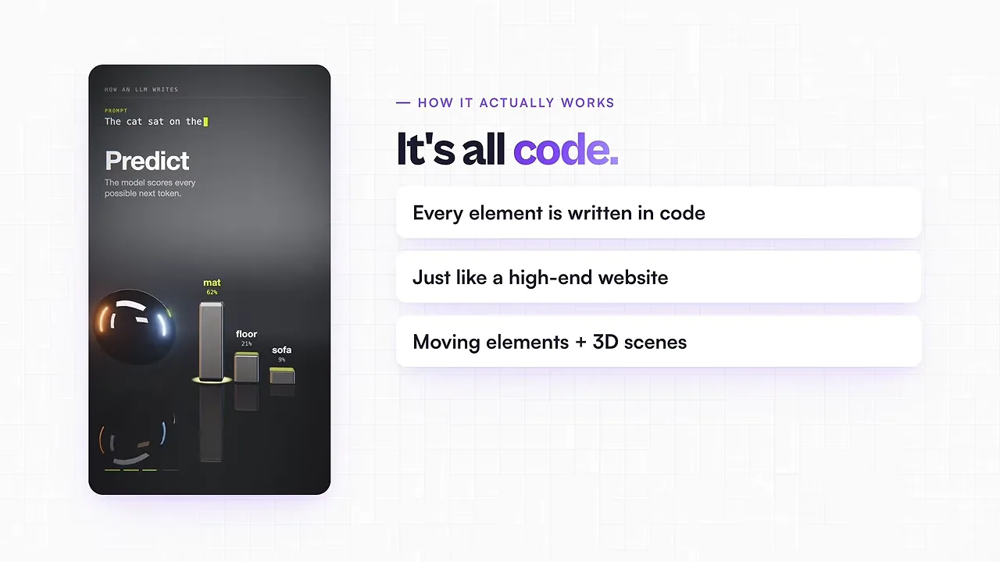
코드가 영상이 되는 과정은 네 단계예요. 아래 화면 맨 아래에 번호와 함께 나와요. AI writes code(AI가 코드를 써요), Hidden browser(보이지 않는 브라우저에서 띄워요), Screenshot(화면을 찍어요), Stitch(이어 붙여요). 오른쪽 위 큰 숫자 60은 1초에 찍는 스크린샷 수예요. 가운데 점선 안의 보라색 칸 하나하나가 프레임이에요.
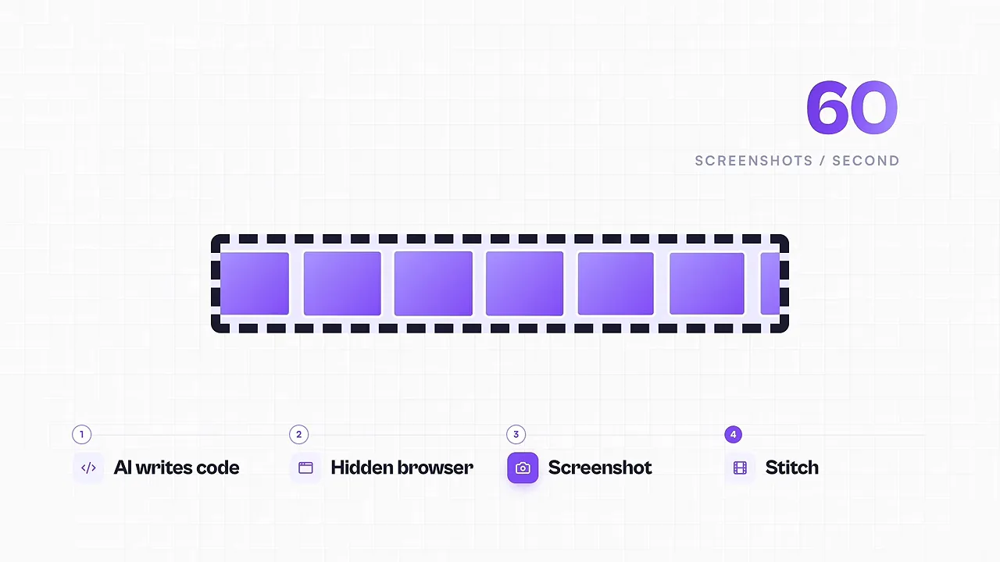
Three.js와 셰이더
Three.js는 웹 개발 쪽에서 오래 써 온 프레임워크예요. 아래 슬라이드 제목처럼 원래 3D 웹사이트를 만들려고 만든 거예요. 왼쪽 브라우저 창 안에 보라색 매듭 모양 3D 물체가 떠 있어요. 이 모션 그래픽은 결국 애니메이션을 넣고 녹화한 웹사이트라서, 웹사이트에 3D를 만들 수 있으면 영상에도 만들 수 있어요. 영상 속 3D는 전부 Three.js 덕분이에요.
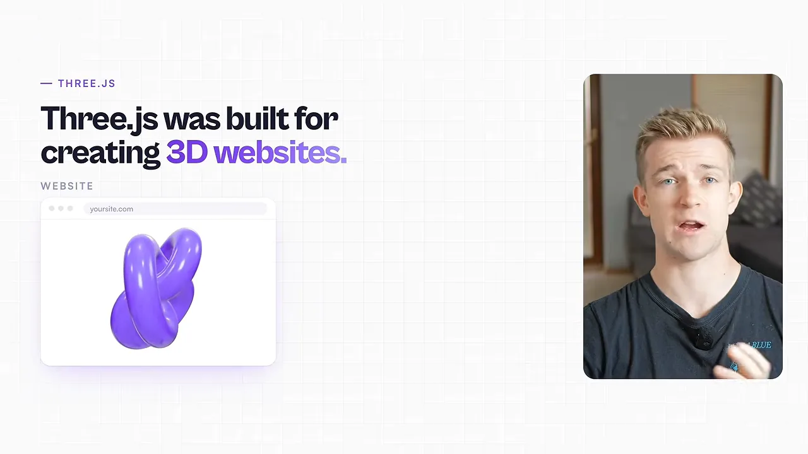
반사, 빛 번짐, 입자 같은 효과는 셰이더가 맡아요. 아래 슬라이드 제목이 'GPU가 그리는 효과'이고, 예시 두 개가 Reflections(크롬 공에 비친 반사)와 Particles(소용돌이 모양 입자)예요. 셰이더는 컴퓨터의 GPU(Graphics Processing Unit)를 써서 이런 고급스러운 느낌을 만들어요.
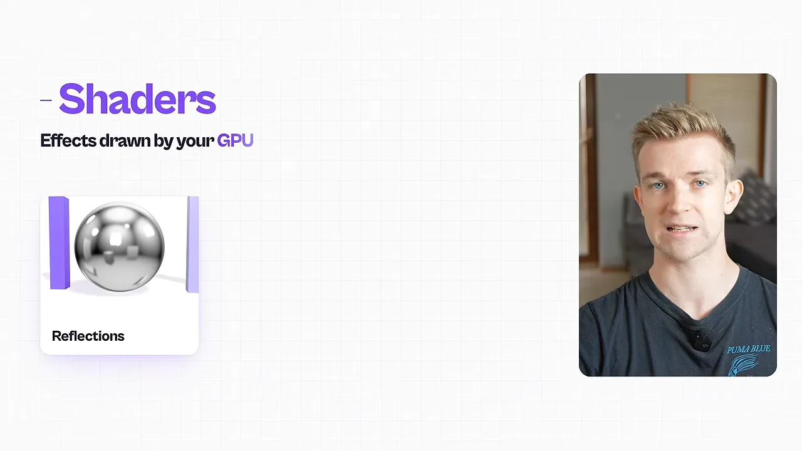
그래서 프롬프트에 '적절한 곳에 셰이더도 써 줘'라고 적어 두라고 해요. 똑똑한 모델이면 어디에 셰이더를 쓸지 스스로 알아내요.
RAG 데모와 비용 계산
세 번째 데모는 RAG를 설명해요. RAG는 머리로 잡기 어려운 개념인데, 3D로 펼치면 벡터가 어떻게 움직이는지 한눈에 보여요. 발표자는 이게 보기 좋을 뿐 아니라 사람들이 개념을 이해하는 데도 실제로 더 낫다고 해요. 아래는 마지막 장면이에요. 문서 조각이 색깔별 점 무리(분류별 묶음)로 흩어져 있고, 오른쪽 파란 구가 언어 모델이에요. 그 위 카드가 모델이 만든 답이에요. 'Settings → Security로 가서 Reset password를 누르라'는 내용이에요.
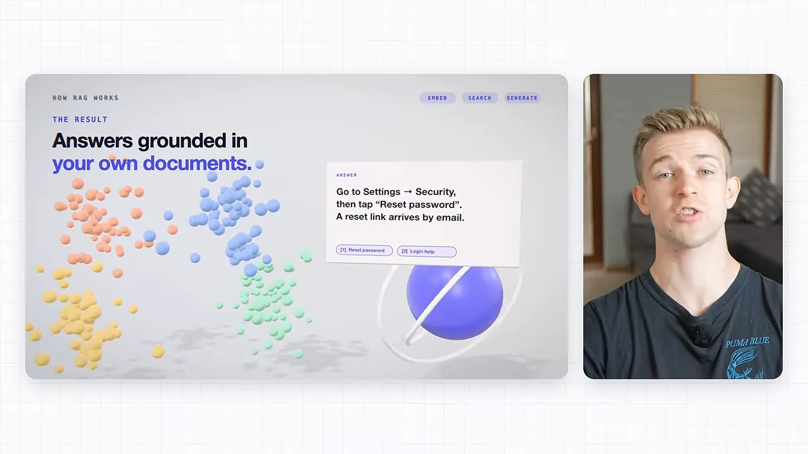
이 데모의 프롬프트도 화면에 나와요. 오른쪽 위에 'How RAG works · clay demo'라고 적혀 있어요. 첫 데모와 같은 틀이에요. 첫 문단에서 규격과 렌더링 방법을 정하고, Style 문단에서 부드러운 점토 질감과 조명을 정해요. 가운데 단의 1~5번이 장면이에요. Intro, Embed(문서 카드 12장이 3D 의미 공간에서 점 220개로 흩어져요), Search(질문이 검색창에 들어가 가장 가까운 점 3개를 찾아요), Generate, Close예요.
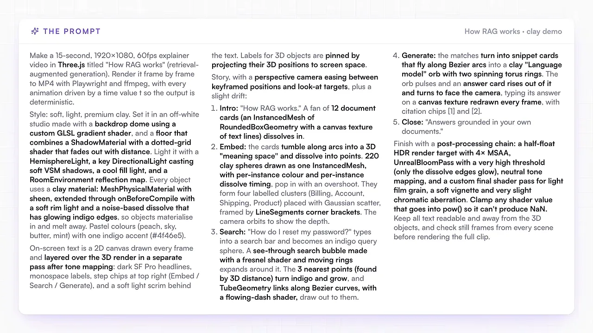
15초 한 편에 얼마가 들까요
발표자는 이미 AI 구독을 하고 있다면 거의 공짜라고 해요. 아래 화면에 계산이 다 나와요. 이 RAG 영상에 3만 7천 토큰이 들었고, Opus 5.5는 100만 토큰에 20달러예요. 곱하면 API 요금으로 74센트인데, 화면에서는 이 숫자에 줄을 그어요. 아래 보라색 띠가 Claude 구독제 기준이에요. 한 편에 약 5센트, 가장 싼 요금제로 일주일에 400편이에요.
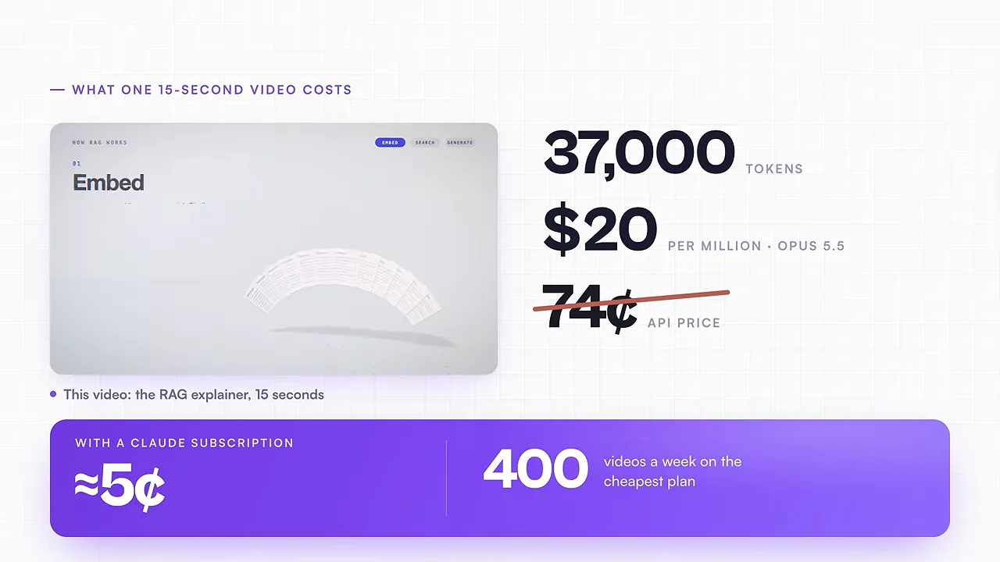
Claude가 없어도 이 방법은 쓸 수 있어요. ChatGPT 같은 다른 서비스로도 되지만, 효과가 덜하고 원하는 걸 얻으려면 프롬프트를 더 잘 써야 한다고 해요.
영상 생성 모델과 비교하면
발표자는 영상 생성 모델 Seedance 2.5와 비교해요. 지금 가장 좋은 모델 중 하나인데, 가장 싸게 잡아도 1초에 10센트예요. 15초면 1.5달러예요. 아래 화면 왼쪽의 납작한 보라색 판이 Claude의 5센트이고, 오른쪽에 높이 쌓인 흰 판이 Seedance의 1.5달러예요. 그래서 30배 싸다는 거예요.
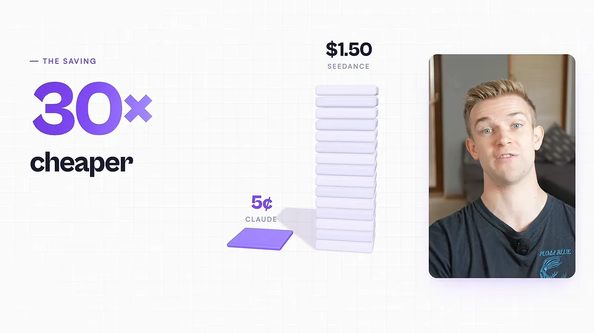
수정까지 생각하면 차이가 더 커요. Claude와 Three.js는 코드만 고치면 되니 몇 번을 고쳐도 몇 푼이에요. 아래 화면에서 Claude 쪽은 Edit 세 번에 'pennies'예요. Seedance 2.5는 고칠 때마다 1.5달러가 붙어서 세 번이면 4.5달러예요. 오른쪽 흰 판 더미가 세 개로 늘었어요.
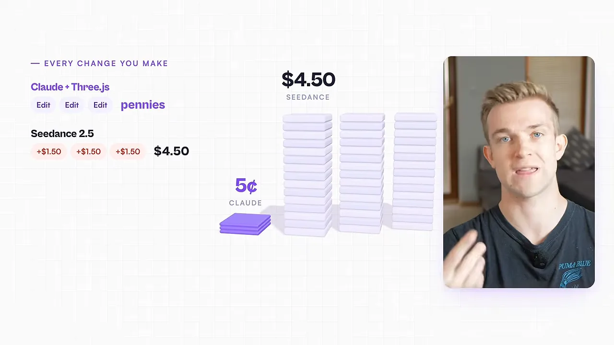
영상에 나온 숫자를 한 표로 모으면 이래요.
| 만드는 방법 | 15초 한 편 | 세 번 고치면 |
|---|---|---|
| Claude + Three.js (API 요금) | 74센트 | 몇 푼 더 |
| Claude + Three.js (구독제, 발표자 계산) | 약 5센트 | 몇 푼 더 |
| Seedance 2.5 (1초 10센트) | 1.5달러 | 4.5달러 더 |
물론 이 방법으로 Seedance 2.5가 하는 걸 다 할 수는 없어요. 발표자의 결론은 모션 그래픽만큼은 이 방법이 더 싸고, 과정도 더 낫다는 거예요.
경사하강법 데모와 쓸 곳
네 번째 데모는 분위기가 달라요. 종이 같은 배경에 점무늬가 깔려 있어요. 주제는 경사하강법, 그러니까 신경망이 학습하는 방식이에요. 01 Guess 장면에서 고양이 그림을 넣으면 신경망이 처음엔 dog라는 틀린 답을 내요. 아래 03 Step downhill 장면에서는 파란 등고선 곡면 위의 분홍 점이 기울기를 따라 아래로 내려가요. 오른쪽 아래 작은 그래프가 단계마다 줄어드는 손실이에요.
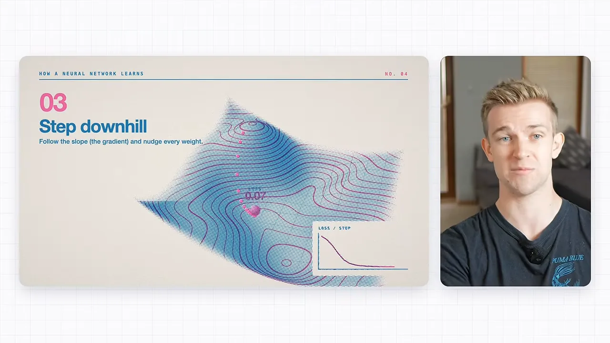
발표자는 자신이 난독증이 심하다고 말해요. 그래서 글을 읽는 것보다 그림과 애니메이션으로 작동 방식을 보는 게 훨씬 잘 이해된다고 해요. 과정을 설명하는 데 이 방식이 좋은 이유예요.
어디에 쓸 수 있나요
발표자는 쓸 곳에 거의 한계가 없다고 해요. 아래 화면의 카드 여섯 장이 영상에서 꼽은 쓸 곳이에요. 왼쪽 위부터 Social media, Short-form, Podcast clips, Client-call clips, Explainers, Launches예요.
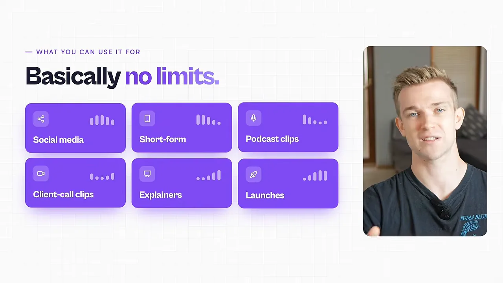
- 소셜 미디어, 숏폼: 발표자는 이 영상에 나온 모션 그래픽도 거의 다 이 방법으로 만들었어요. 예전엔 편집자에게 맡기면 비쌌는데, 이제는 거의 공짜예요.
- 팟캐스트 클립: 팟캐스트를 잘라 클립을 만들고 모션 그래픽을 얹어서, 소셜 미디어에서 더 눈길을 끌게 해요.
- 고객 통화 클립: 고객과의 화상 통화에서 흥미로운 부분을 골라 모션 그래픽을 붙이고 소셜 미디어에 올려요.
- 설명 영상, 출시 영상: 제품을 내놓거나 소프트웨어, 회사, 서비스에 새 기능을 소개할 때 써요.
지구본 데모와 프롬프트 체크리스트
마지막 데모는 인터넷이 메시지를 어떻게 보내는지 보여 줘요. 어두운 배경에 푸른 지구본이 있고, 장면은 Split(메시지를 번호 붙은 작은 패킷으로 쪼개요), Route(패킷마다 자기 길로 라우터를 거쳐 가요), Reassemble(순서 없이 도착한 패킷을 다시 맞춰요)로 이어져요. 아래는 Route 장면이에요. 런던 근처에서 번호 붙은 패킷들이 출발하고, 오른쪽 아래 작은 표가 라우터 기록이에요.
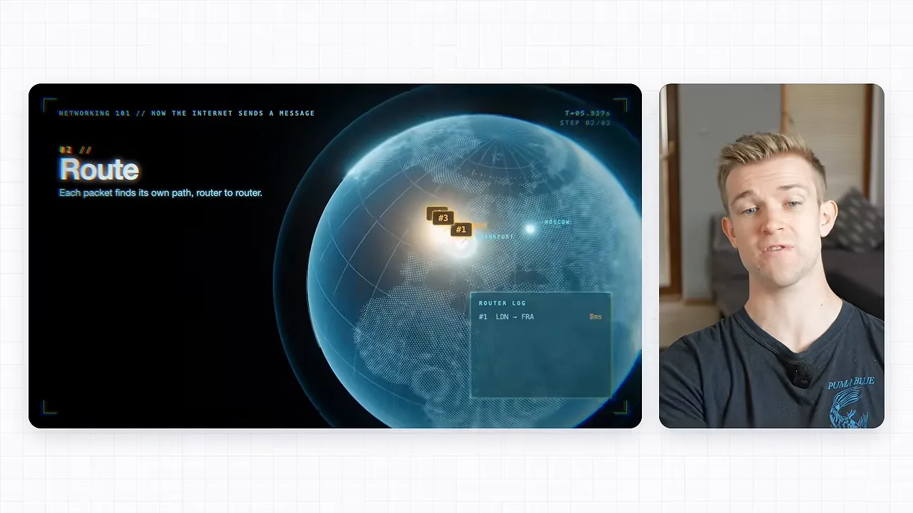
얼마나 자세히 써야 할까요
원하는 결과가 얼마나 정해져 있는지에 따라 달라요. 아래 화면 왼쪽 카드는 '딱 정한 게 있다면 아주 구체적으로', 오른쪽 카드는 '아이디어에 열려 있다면 느슨하게'예요. 오른쪽 카드에는 'Opus 5.5 같은 똑똑한 모델이라면'이라는 조건이 붙어 있어요.

느슨하게 맡길 때는 '정말 좋은 아이디어를 하나 내 줘'라고만 해도 돼요. 이미 찍어 둔 영상이 있다면 그 위에 얹을 3D 모션 그래픽을 만들어 달라고 해도 되고요. 발표자는 이렇게 해도 결과가 놀라울 만큼 좋다고 해요.
프롬프트에 꼭 넣을 다섯 가지
그래도 빠뜨리면 안 되는 게 있어요. 아래 화면의 체크리스트 다섯 줄이에요.

- Three.js와 셰이더를 쓰라고 해요 — 3D이면서 고급스러운 느낌을 원하면 둘 다 꼭 적어요.
- '전문적이고 세련되게 만들어 줘'라고 해요 — 단순한 말인데 실제로 결과가 꽤 달라져요.
- 꿈의 직장에 내는 쇼릴이라고 해요 — '정말 원하는 모션 그래픽 직무에 지원하는 거라고 생각하고 멋진 쇼릴을 만들어 줘'라고 적어요. 발표자도 좀 이상하다고 인정하지만, 이렇게 하면 결과가 나아졌대요. 예전에 AI에게 '세계 최고의 소프트웨어 엔지니어인 척해'라고 하던 것과 비슷해요.
- 카메라도, 요소도 3D로 움직이게 해요 — 카메라가 장면 사이를 도는 것뿐 아니라 장면 안의 요소도 움직이게 해요. 발표자는 이게 품질을 한 단계 올린다고 해요. AI 그래픽에서 잘 안 보이는 연출이라 눈에 띄어요.
- 검증 루프를 돌리게 해요 — 만든 결과를 스스로 다시 보게 해요. 요소가 겹치지 않는지, 글자가 너무 작지 않은지 확인하고 실수를 없앤 뒤에 내보내요. 첫 데모 프롬프트 끝의 '글자를 화면 안에 읽기 좋게 두고, 전체를 렌더링하기 전에 장면마다 정지 화면을 확인하라'는 문장이 이 역할이에요
발표자는 몇 달 전만 해도 이런 건 AI로 만들 수 없었고, 맡기면 수천 달러가 들었을 거라고 말하며 직접 해 보라고 권해요.